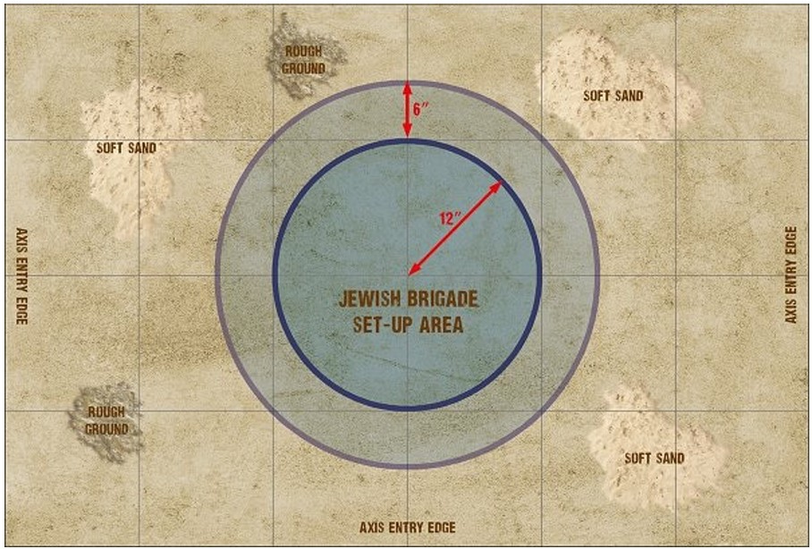
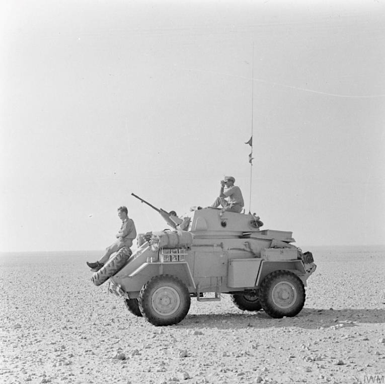
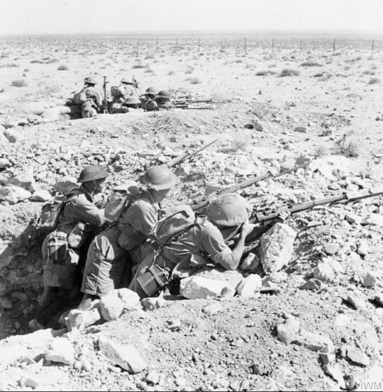

Fuerzas enfrentadas
Informe operacional sobre el sector de Bir-el Harmat durante el arranque de la ofensiva de Gazala. La acción enfrenta una defensa atrincherada y conocedora del terreno con una penetración blindada del Afrika Korps bajo apoyo aéreo superior.
Esta batalla se libra entre las fuerzas de la Commonwealth británica y el Afrika Korps.
Los pelotones británicos deben elegirse del selector de pelotón reforzado de Brigada de Infantería Británica de 1942. En este escenario no pueden elegirse selecciones de cuartel general ni de infantería.
Los pelotones alemanes deben elegirse del selector de pelotón reforzado de División Panzer DAK de 1942. Ten en cuenta que el Panzer IV F2 no puede seleccionarse en este escenario.
Despliegue
Todas las fuerzas de la Brigada Judía deben colocarse a menos de 12” del centro de la mesa. Las unidades del Afrika Korps pueden entrar por cualquier borde de la mesa.
No hay unidades desplegadas sobre la mesa al comienzo de la batalla. Ambos bandos deben designar al menos la mitad de su fuerza para formar la primera oleada. Puede ser el ejército entero si así se desea. Las unidades no incluidas quedarán en reserva.

Reglas especiales
Terreno
La mesa representa desierto abierto, con cobertura limitada a pequeños grupos de arbustos y afloramientos de roca arenisca. Como se muestra en el mapa, toda el área dentro de un radio de 18” desde el centro de la mesa se considera un campo de minas mixto anticarro/antipersonal. Asume que el campo está compuesto por tres anillos concéntricos de minas de 6” de anchura. Además, debido a sus numerosas trincheras y pozos de tirador, toda el área de despliegue de la Brigada Judía se considera terreno difícil.

La guerra de movimiento en Gazala exigía reconocimiento blindado, navegación en desierto abierto y rápidas maniobras de penetración.
Brigada Judía
Todas las unidades de la Brigada Judía comienzan el escenario atrincheradas y ocultas.
Conocen perfectamente la disposición del campo de minas y nunca son atacadas por él.
Como están luchando contra un enemigo odiado, se consideran tozudas.
También son cazatanques superiores. Tienen todas las ventajas normales del rasgo cazatanques, pero al asaltar un vehículo impactarán con un 3, 4, 5 o 6 si este está inmovilizado, tiene una orden de Down o aún no se ha movido. Si el vehículo tiene una orden de Advance, podrá ser impactado con una tirada de 5 o 6.
Ataques aéreos
Al comienzo de la ofensiva de Gazala, el cuartel general de la Luftwaffe fue trasladado al norte de África y todos sus recursos aéreos se emplearon en apoyo de la ofensiva. Junto con los italianos en el norte de África, tenían superioridad numérica y cualitativa, y además el combate estaba al alcance de los aeródromos de Creta. Por ello, en los escenarios de Gazala, que se sitúan en la fase inicial de la ofensiva, el Eje debe contar con una clara superioridad.
El jugador del Eje puede desplegar un observador aéreo avanzado.

La observación desde posiciones avanzadas y el dominio del terreno abierto encajan mejor con el tipo de resistencia y vigilancia defensiva que caracteriza este escenario.
Objetivo
Las fuerzas alemanas deben intentar llevar vehículos blindados al centro de la zona de despliegue de la Brigada Judía.
Primer turno
Durante el Turno 1, los alemanes deben introducir en la mesa su primera oleada. Estas unidades pueden entrar en la mesa por cualquier borde y deben recibir una orden de Run o Advance. Ten en cuenta que no es necesario realizar chequeo de orden para mover unidades a la mesa como parte de una primera oleada.
Duración de la partida
Lleva la cuenta de cuántos turnos han transcurrido durante la partida. Al final del Turno 6, tira un dado. Con un resultado de 1, 2 o 3, la partida termina; con un 4, 5 o 6, se juega un turno adicional.
¡Victoria!
Al final de la partida, determina qué bando ha ganado sumando los puntos de victoria obtenidos por cada uno. Si un bando consigue al menos 5 puntos más que el otro, obtiene una victoria clara. En caso contrario, el resultado se considera demasiado ajustado y la batalla termina en empate.
La Brigada Judía recibe 2 puntos de victoria por cada unidad alemana destruida.
El jugador alemán recibe 1 punto de victoria por cada unidad de la Brigada Judía destruida y 3 puntos de victoria por cada vehículo blindado alemán no inmovilizado que se encuentre a menos de 6” del centro de la zona de despliegue de la Brigada Judía.